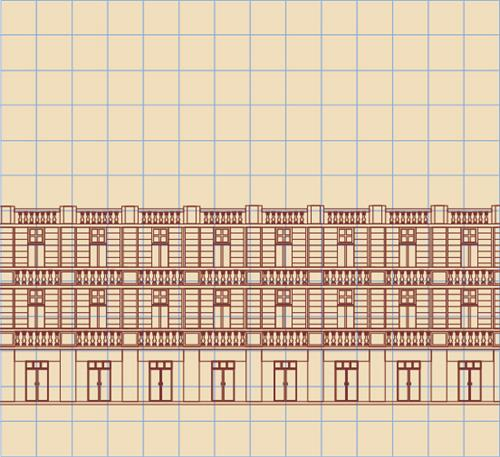

所在街区：武汉市江汉区保华街 建筑风格：古典主义 建造年代：1931年 现存情况：商用

金城银行大楼于1928年选址（现址武汉市江岸区保华街2号），由中国第一代建筑大家、上海留美建筑师庄俊设计，景明洋行绘图，汉协盛营造厂施工。
1930年动工，次年建成4层银行大楼及金城里住宅，应用当时最先进的钢筋混凝土技术，以西方建筑技术为其骨干，融合中国传统建筑装饰，开创欧式新古典主义风格。建筑费共计28万元。
庄俊祖籍浙江宁波，1910年考取庚款公费留学进清华留美预备学校读书，当年被派遣到美国伊利诺大学学习建筑工程。4年后，成为中国第一位获得建筑工程学位和"建筑师"职称的人，回到清华学校参与新校舍建设